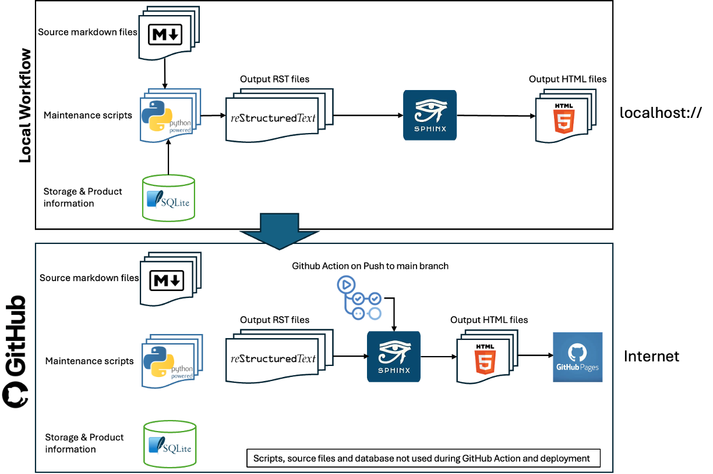

Technical Information¶
General Background
This site is developed and maintained using a publically available Github Repository. All changes are viewable in the commit history.
This site is primarily served through a custom domain mc6800.info which is then redirected to a set of GitHub Pages.
To understand how the site is maintained, there are several aspects to be described, and a quantity of information sources.
The main tools used in the local deployment of the site are:
SQLite Database
For each of the products, there is an entry in a Sqlite database held locally.
Python
A set of Python scripts maintains the database through the medium of a terminal interface fronted by a set of menus. Note that all of the Python scripts are custom-written for this single purpose.
Sphinx
Sphinx is a documentation generator written and used by the Python community.
Local Workflow
Stage 1
There exist a set of static pages which are in markdown format which are manually maintained. Due to Sphinx’s ability to preprocess markdown as well as RST, this is no issue.
Stage 2
The Python scripts create a single RST file for each product, using data from the SQLite database, together with any links that have been created to related products or documents etc.
Additionally, a set of tables is constructed (again as RST documents) which relate to the products present in the collection, timeline of acquisition and a map of where those products are stored in the collection (folder X, Storage Box Y etc).
Once this is done, Sphinx is called, which takes as input the whole set of RST files generated and creates a local website which can be browsed.
All of the above as described happens on a local device.
Remote Workflow
Once satisfied with any changes, the whole repository’s changes are committed and pushed to the GiHub repository as a Pull Request.
When the PR is approved and merged, a GitHub Action is invoked to call Sphinx on the outputted RST files to produce a GitHub Pages website.
Both local and GitHub Actions workflow
{kind=link}
